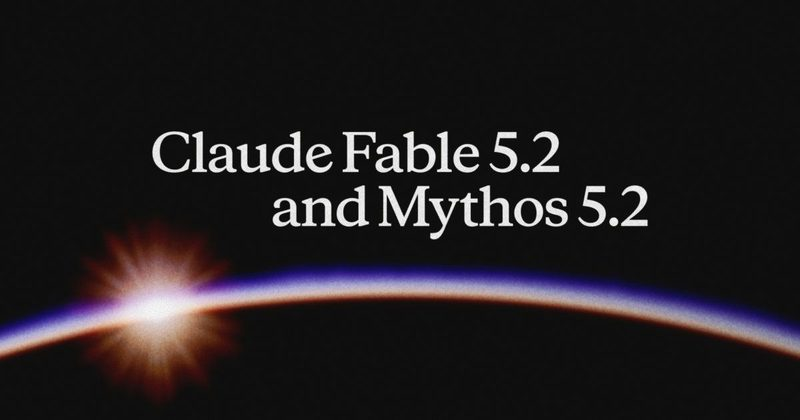
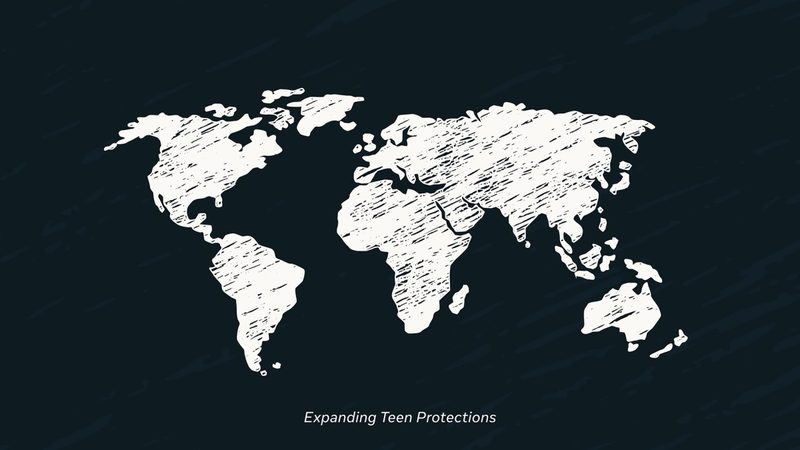
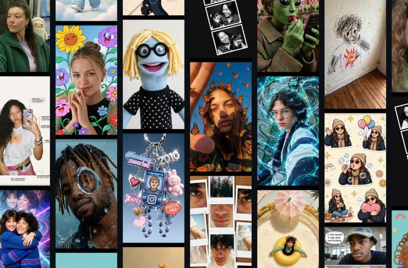
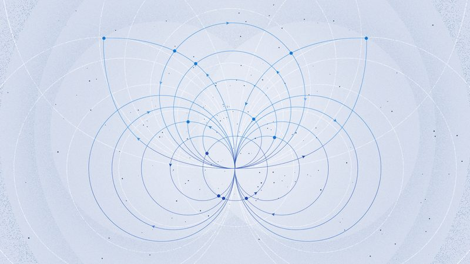

今日頭條
Anthropic 推出 Claude Fable 5.2 PLUS：Instagram 全球用 AI 推估青少年年齡
本期重點：Anthropic 發表 Claude Fable 5.2 與 Mythos 5.2，速度更快、價格更低；Meta 把 AI 年齡推估擴大到全球，讓更多謊報年齡的青少年自動套用保護。另有 Instagram 用一句話做濾鏡、Meta 最小模型 Muse Ember、Disney 與 Adobe 合作 AI、Google 新 TPU、Medium 推出 AI 寫作 App，以及川普在《60 Minutes》談 AI 安全。
📋 2026/11/10（二） 共 8 則 Anthropic 推出 Claude Fable 5.2，輸出快三成、價格調降 Instagram 把 AI 年齡推估擴大到全球，謊報生日的青少年也會被套用保護 Instagram 推出 Effect Builder，打一句話就能做限動濾鏡 Meta 推出最小模型 Muse Ember，主打便宜跑大量代理工作 Disney 與 Adobe 簽多年合作，用迪士尼角色訓練專屬 AI 模型 Google 再推兩款 TPU，一年內推出四套第八代系統 Medium 推出免費 AI 寫作 App「TK」，可標註 AI 用在哪裡 川普在《60 Minutes》談 AI：風險可控，願與民主黨合作訂護欄 
圖：Anthropic 新上線 #1 Anthropic 推出 Claude Fable 5.2，輸出快三成、價格調降 Anthropic 11 月 9 日發表 Claude Fable 5.2 與 Claude Mythos 5.2，兩者是同一個底層模型。官方表示輸出速度比 5.1 版最多快 30%，API 價格降為每百萬輸入 tokens 8 美元、輸出 40 美元；測試期間曾用 1,000 個 Fable 5.2 代理在 30 小時內完成費馬最後定理的形式化證明。Fable 5.2 即日起在各平台開放，Mythos 5.2 只開放給通過審核的資安與生醫機構。
💡 跟你有什麼關係： 付費訂閱 Claude 的用戶可以直接選用新模型處理較複雜的程式或研究工作；官方也建議一般寫作與日常工作先用 Opus 5.5，難題再換 Fable，比較省額度。
⚠️ 數據與案例為 Anthropic 自評；Fable 5.2 內建資安與生物安全防護，相關請求會被擋下改由其他模型回答。
📰 原始來源：Anthropic 官方（2026-11-09） ↗ 
圖：Meta 新聞 #2 Instagram 把 AI 年齡推估擴大到全球，謊報生日的青少年也會被套用保護 Meta 11 月 9 日宣布，把用 AI 找出疑似青少年帳號的技術擴大到全球 Instagram，即使用戶填了成年人的生日，也會被放進「青少年帳號」保護，限制誰能聯絡他們、看到的內容與使用時間。Facebook 也在持續推出，Threads 預計年底前開始。美國家長本月會在 Instagram 收到說明影片；在澳洲，Meta 另外開始使用 Apple 提供的年齡區間訊號。
💡 跟你有什麼關係： 台灣的青少年同樣在適用範圍內，孩子就算謊報年齡，也比較可能自動套用私訊與內容限制；家長可以趁機和孩子確認帳號年齡是否正確。
⚠️ AI 推估仍可能誤判，Meta 未公布準確率；被誤判的成年人需自行申訴更正。
📰 原始來源：Meta 官方（2026-11-09） ↗ 
圖：Instagram／Meta（經 The Verge） 工具 #3 Instagram 推出 Effect Builder，打一句話就能做限動濾鏡 The Verge 11 月 9 日報導，Instagram 在網頁版推出 Effect Builder，用戶描述想要的濾鏡效果、可附上風格參考圖，AI 就會生成限時動態用的濾鏡，還能上傳自己的照片預覽、再用追問微調。做好的濾鏡可直接送審，通過安全審查後所有人都能在限動使用，並會連回作者的個人檔案。
💡 跟你有什麼關係： 不會寫特效程式的人也能做出自己的濾鏡，小店家或創作者可以用來做活動專屬效果。
⚠️ 目前只開放美國 18 歲以上用戶，台灣何時開放未公布；本則依 The Verge 報導，未找到 Instagram 官方公告頁。
📰 原始來源：The Verge（2026-11-09） ↗ 
圖：Meta Superintelligence Labs 新上線 #4 Meta 推出最小模型 Muse Ember，主打便宜跑大量代理工作 Meta 超級智慧實驗室 11 月 9 日發表 Muse Ember，是 Muse 系列最小、最省成本的模型，專門處理工具呼叫、程式小任務、資料擷取與長文件解析。官方定價每百萬輸入 tokens 0.10 美元、輸出 0.50 美元，支援 100 萬 tokens 上下文，能直接看懂文字、圖片、聲音與影片；Meta 稱它的每美元效能勝過 Claude Haiku 5.5 與 GPT-6 Luna。
💡 跟你有什麼關係： 小模型變便宜，App 和客服系統比較負擔得起大量使用 AI，未來一般人用到的 AI 功能可能更多、更快。
⚠️ 效能比較為 Meta 自評；目前只在 Muse Code 與 Meta Model API 提供，主要給開發者。
📰 原始來源：Meta 官方（2026-11-09） ↗ 圖：Adobe 資金 #5 Disney 與 Adobe 簽多年合作，用迪士尼角色訓練專屬 AI 模型 Adobe 11 月 9 日在 Adobe MAX 宣布與華特迪士尼公司結為多年策略聯盟，Adobe 成為迪士尼的「官方 AI 創新夥伴」，提供 Firefly、Firefly Foundry、Premiere 與 Photoshop 等工具搶先使用。雙方會用迪士尼角色、場景與畫風打造專屬生成模型；迪士尼幻想工程研發部門已在用手繪草圖轉概念圖的模型開發主題樂園。
💡 跟你有什麼關係： 往後的迪士尼樂園、郵輪與 ESPN 體育內容，可能有更多 AI 輔助產出的設計；也顯示大型片商傾向用自家素材訓練模型，而不是用來源不明的資料。
⚠️ 雙方未公開金額；The Verge 指出迪士尼據報正準備新一輪裁員。
📰 原始來源：Adobe 官方（2026-11-09） ↗ 圖：Google 新聞 #6 Google 再推兩款 TPU，一年內推出四套第八代系統 Google 11 月 9 日發表 TPU 8tx 與 TPU 8i Max。8tx 在硬體層加密，資料運算時也受保護，鎖定政府與受監管企業；8i Max 把兩顆 8i 晶片封裝在一起，運算、SRAM 與記憶體頻寬都是 8i 的兩倍，用來處理超長上下文。Google 表示 TPU 已有近 100 家客戶，這是首次一年內推出四套 TPU 系統。
💡 跟你有什麼關係： 雲端 AI 晶片競爭越激烈，服務成本越可能下降；需要處理機密資料的銀行、醫院也多了用雲端 AI 的選項。
⚠️ 效能數字為 Google 自評，未公布上市時間與價格。
📰 原始來源：Google 官方部落格（2026-11-09） ↗ 圖：Medium（經 TechCrunch） 工具 #7 Medium 推出免費 AI 寫作 App「TK」，可標註 AI 用在哪裡 寫作平台 Medium 11 月 9 日推出新 App TK，在編輯器裡輸入「@TK」加上需求，AI 就能幫忙查資料、給標題與編修建議，或找出你先前存下的片段。作者發表時可附上說明，公開 AI 在文章中扮演的角色；目前只有網頁版，有 Medium 帳號即可免費使用。
💡 跟你有什麼關係： 寫部落格或報告時不用在多個分頁間切換查資料；主動標示 AI 用途，也能讓讀者比較放心。
⚠️ 內容未加密，桌面版仍在規劃中；本則依 TechCrunch 報導，Medium 官方部落格網頁無法直接讀取。
📰 原始來源：TechCrunch（2026-11-09） ↗ 圖：Getty Images（經 The Verge） 政策 #8 川普在《60 Minutes》談 AI：風險可控，願與民主黨合作訂護欄 美國總統川普在 CBS《60 Minutes》專訪中表示，AI 風險「沒有他們說的那麼真實」、可以管理；他也聲稱司法部曾警告某大型 AI 公司負責人「準備坐牢」，但拒絕透露是誰。被問到是否會和民主黨合作處理 AI 安全時，他說「絕對會」，但不希望讓美國落後中國。
💡 跟你有什麼關係： 美國的 AI 管制方向會影響 ChatGPT、Claude、Gemini 等服務未來能做什麼、怎麼保護用戶，台灣用戶也會受到連帶影響。
⚠️ 「威脅逮捕 AI 高層」為川普單方說法，未說明對象與細節，尚無其他證實；本則依 The Verge 整理的專訪內容。
📰 原始來源：The Verge（2026-11-09） ↗ ✅ 2026/11/10（二） 可以做： 家裡有青少年用 Instagram 的話，可以一起打開帳號設定確認生日與「青少年帳號」狀態，年齡正確才能套用對應的保護。
🗂️ 過去 14 天